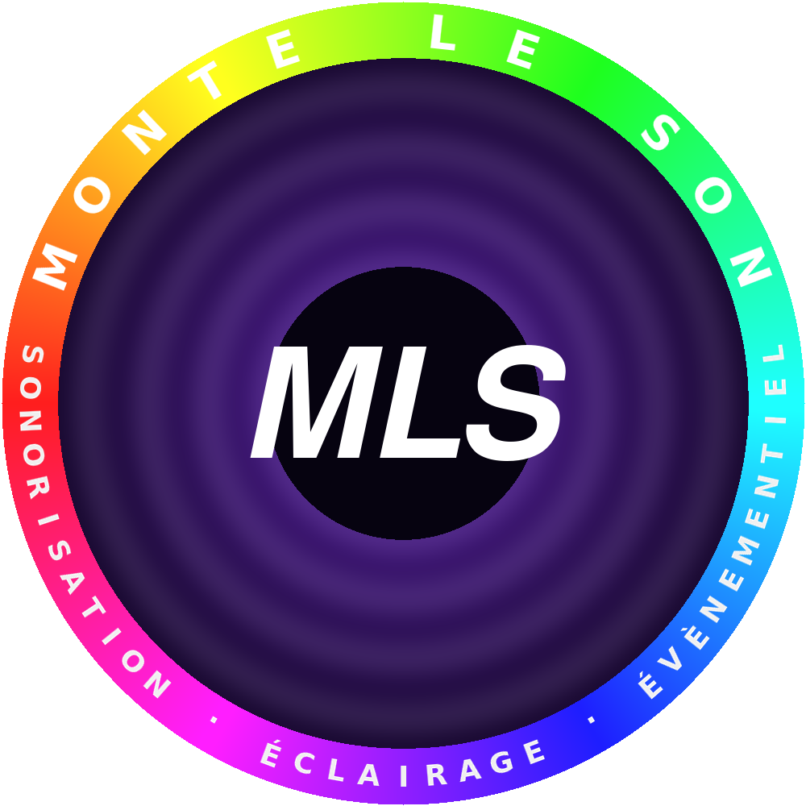

SONORISATION • ÉCLAIRAGE • ÉVÈNEMENTIEL • MONTE LE SON •
⚠️ Place ton logo nommé « mls-logo.png » dans le même dossier que ce fichier.
F
plein écran •
M
micro :
off
•
C
palette •
+/-
vitesse •
↑/↓
nb points •
T
texte on/off •
Espace
pause